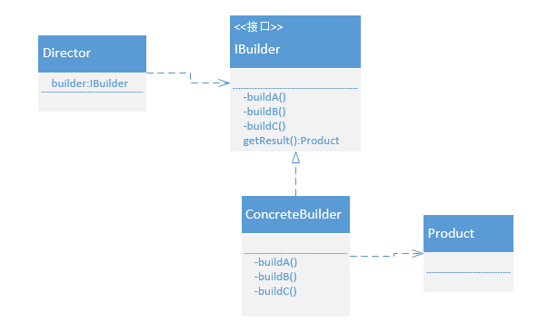

建造者模式是把一个复杂对象的创建过程给结构化，当创建一个对象需要的参数大于5个，并且参数还可选的时候，如果使用构造器来区分，会使类的构造函数很多，使用起来非常混乱，并且对于部分必选参数，没办法进行合理控制，因此我们可以把一个复杂度对象的创建给结构化，分门别类的构建不同的部分，传统建造者模式的类图如下所示：

使用建造者模式的优点：
- 在建造者模式中， 客户端不必知道产品内部组成的细节，将产品本身与产品的创建过程解耦，使得相同的创建过程可以创建不同的产品对象。
- 每一个具体建造者都相对独立，而与其他的具体建造者无关，因此可以很方便地替换具体建造者或增加新的具体建造者， 用户使用不同的具体建造者即可得到不同的产品对象 。
- 可以更加精细地控制产品的创建过程 。将复杂产品的创建步骤分解在不同的方法中，使得创建过程更加清晰，也更方便使用程序来控制创建过程。
- 增加新的具体建造者无须修改原有类库的代码，指挥者类针对抽象建造者类编程，系统扩展方便，符合“开闭原则”。
实际在使用建造者模式时，通常会省略Director类的角色，并且让Builder承担部分Director的角色，再结合链式语法，可以使创建对象非常简洁并且使用方便，下面我们用Mybatis源码中的参数映射器ParameterMapping来分析：
- ParameterMapping的字段和构造方法都是private私有的，并且只提供get方法，那说明ParameterMapping的对象一旦创建成功就不能修改其属性值;
- ParameterMapping的静态内部类Builder负责创建ParameterMapping对象，并给成员变量赋值：最终在Builder的build()方法中完成参数检验并返回创建的对象:
1
2
3
4
5
6
7
8
9
10
11
12
13
14
15
16
17
18
19
20
21
22
23
24
25
26
27
28
29
30
31
32
33
34
35
36
37
38
39
40
41
42
43
44
45
46
47
48
49
50
51
52
53
54
55
56
57
58public class ParameterMapping {
private Configuration configuration;
private String property;
private ParameterMode mode;
private Class<?> javaType = Object.class;
private JdbcType jdbcType;
private Integer numericScale;
private TypeHandler<?> typeHandler;
private String resultMapId;
private String jdbcTypeName;
private String expression;
private ParameterMapping() {
}
public static class Builder {
//创建对象
private ParameterMapping parameterMapping = new ParameterMapping();
public Builder(Configuration configuration, String property, TypeHandler<?> typeHandler) {
parameterMapping.configuration = configuration;
parameterMapping.property = property;
parameterMapping.typeHandler = typeHandler;
parameterMapping.mode = ParameterMode.IN;
}
public Builder(Configuration configuration, String property, Class<?> javaType) {
parameterMapping.configuration = configuration;
parameterMapping.property = property;
parameterMapping.javaType = javaType;
parameterMapping.mode = ParameterMode.IN;
}
public Builder mode(ParameterMode mode) {
parameterMapping.mode = mode;
return this;
}
public Builder javaType(Class<?> javaType) {
parameterMapping.javaType = javaType;
return this;
}
public Builder jdbcType(JdbcType jdbcType) {
parameterMapping.jdbcType = jdbcType;
return this;
}
public Builder numericScale(Integer numericScale) {
parameterMapping.numericScale = numericScale;
return this;
}
......
}
......
}使用起来也非常方便：1
2
3
4
5
6
7
8
9
10
11
12
13
14
15
16
17
18
19
20
21
22
23
24
25
26
27
28
29public ParameterMapping build() {
resolveTypeHandler();
validate();
return parameterMapping;
}
private void validate() {
if (ResultSet.class.equals(parameterMapping.javaType)) {
if (parameterMapping.resultMapId == null) {
throw new IllegalStateException("Missing resultmap in property '"
+ parameterMapping.property + "'. "
+ "Parameters of type java.sql.ResultSet require a resultmap.");
}
} else {
if (parameterMapping.typeHandler == null) {
throw new IllegalStateException("Type handler was null on parameter mapping for property '"
+ parameterMapping.property + "'. It was either not specified and/or could not be found for the javaType ("
+ parameterMapping.javaType.getName() + ") : jdbcType (" + parameterMapping.jdbcType + ") combination.");
}
}
}
private void resolveTypeHandler() {
if (parameterMapping.typeHandler == null && parameterMapping.javaType != null) {
Configuration configuration = parameterMapping.configuration;
TypeHandlerRegistry typeHandlerRegistry = configuration.getTypeHandlerRegistry();
parameterMapping.typeHandler = typeHandlerRegistry.getTypeHandler(parameterMapping.javaType, parameterMapping.jdbcType);
}
}1
2
3
4
5
6
7
8
9
10
11
12
13
14
15
16
17
18
19
20
21
22
23
24
25
26
27
28
29
30
31
32
33
34
35
36private ParameterMapping buildParameterMapping(String content) {
ParameterMapping.Builder builder = new ParameterMapping.Builder(configuration, property, propertyType);
Class<?> javaType = propertyType;
String typeHandlerAlias = null;
for (Map.Entry<String, String> entry : propertiesMap.entrySet()) {
String name = entry.getKey();
String value = entry.getValue();
if ("javaType".equals(name)) {
javaType = resolveClass(value);
builder.javaType(javaType);
} else if ("jdbcType".equals(name)) {
builder.jdbcType(resolveJdbcType(value));
} else if ("mode".equals(name)) {
builder.mode(resolveParameterMode(value));
} else if ("numericScale".equals(name)) {
builder.numericScale(Integer.valueOf(value));
} else if ("resultMap".equals(name)) {
builder.resultMapId(value);
} else if ("typeHandler".equals(name)) {
typeHandlerAlias = value;
} else if ("jdbcTypeName".equals(name)) {
builder.jdbcTypeName(value);
} else if ("property".equals(name)) {
// Do Nothing
} else if ("expression".equals(name)) {
throw new BuilderException("Expression based parameters are not supported yet");
} else {
throw new BuilderException("An invalid property '" + name + "' was found in mapping #{" + content + "}. Valid properties are " + PARAMETER_PROPERTIES);
}
}
if (typeHandlerAlias != null) {
builder.typeHandler(resolveTypeHandler(javaType, typeHandlerAlias));
}
return builder.build();
}